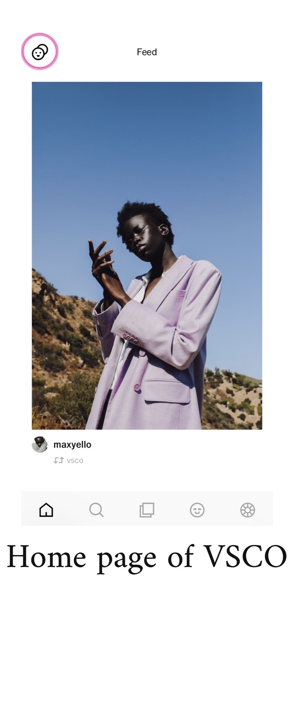
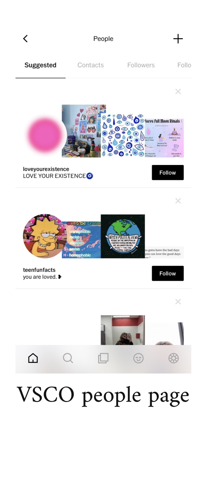
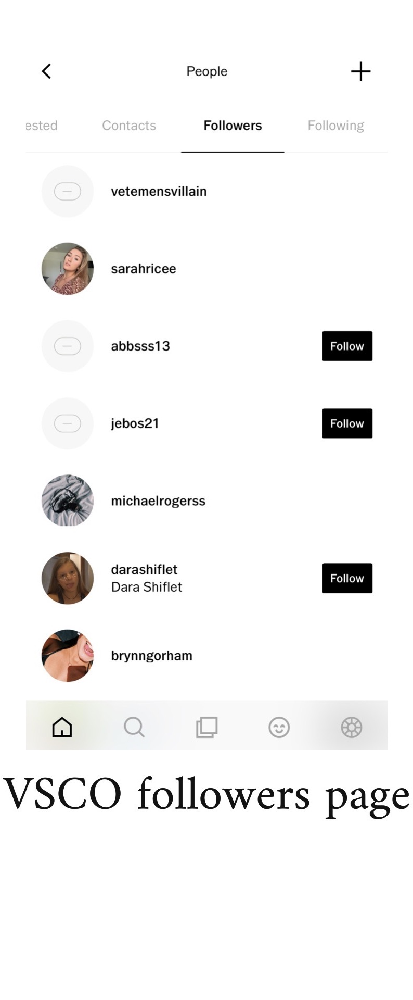
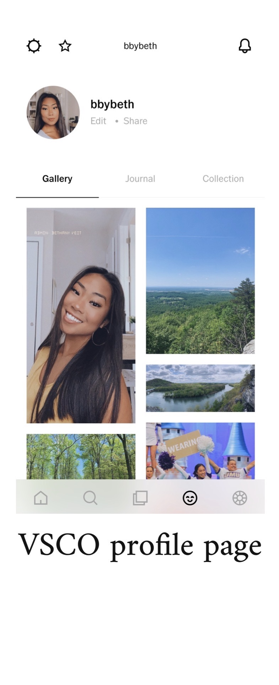
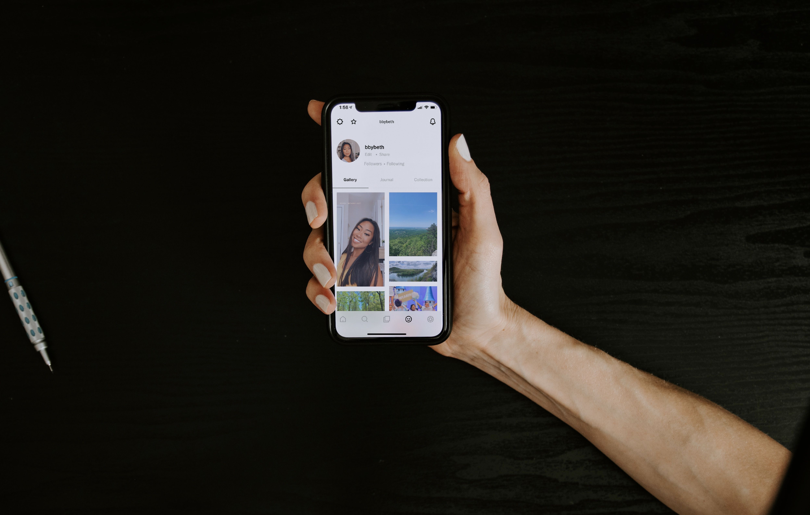
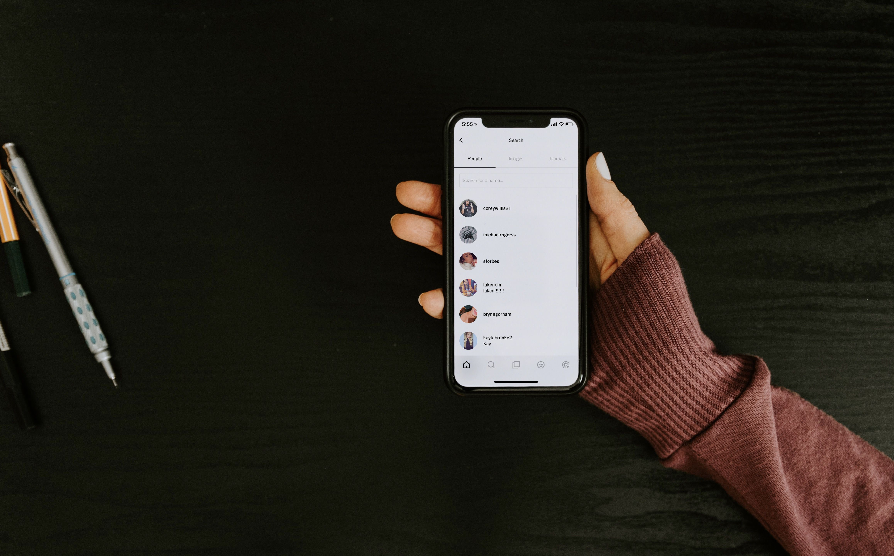

VSCO is a popular photo editing/social media app and website. It has over 40 million users worldwide. However, in this day and age, it is competing with multiple other apps that have the same functions and are easier and/or more enjoyable for the general public to use. The process of finding and following friends is one that should be simpler than it is. I wanted to redesign the flow of the app to make it easier to find and follow friends in order to be able to stay up to date with their posts.
The primary users of the VSCO app are younger individuals who use other, larger social media platforms such as Instagram or Twitter and like the convenience of being able to edit their photos and post ones that don't make it to their more popular feeds.
When analyzing the goals of both the app and the user, I realized that the three main ones aligned for both sides.
The main three goals are:
Mapping out the process it takes to find your followers and who you're following on VSCO, I realized the process wasn't that difficult. However, the feature is a little hidden if you're unsure where to look. In the first screen shot, I have placed a pink circle around the button you have to tap in order to access the next screen.
   As a way to see different users needs, I created a survey that I posted to my social media platforms as a way to get a broad audience of users. I received 64 responses, all of the responders were between the ages of 16-30, with about 20% of the responders being male. Due to the relatively small strata of participants that filled out the survey, this case study may not be the MOST accurate but it will still provide decent data.

In the graph above, you can see that more than half of users surveyed find it difficult to find their friends on the app.
In this next graph, you can see that a slight majority of the users that completed the survey would be more prone to using the app if the followers/following features were more prominently

I also left an open response question on the survey for people to leave suggestions of things they want improved on the app. Multiple people left the response that they would like it to be easier to search for friends. The way that the VSCO search algorithm works at the moment, you basically need to know your friends full username or else it's difficult to find who you're looking for.
As seen in the images above, the main pain point of the application is that it is difficult to search for friends as well as finding your followers and those that you follow.
Pain point #1: Users have difficulty searching for friends on the app.
Pain point #2: Users have difficult finding the list of who they follow and whose following them.
Design Question: "How might we improve the experience of users connecting with their friends using the VSCO mobile app?"
Below you will find simple wireframes of my redesign of the app. The biggest change being the followers / following buttons on the profile page. On the search page, before you type in a name, the page will also show you people that you've recently searched for below the bar for ease of use.

In the next wireframe, you will see that I redesigned the search algorithm. When looking for someone by name, your friends with similar names will show up first and the rest of the seach results from the app will come below that. There are titles to separate the areas.

Based on the results of my survey as well as the UX of other social media apps, I have brainstormed a new idea for finding and following friends for the VSCO application. Similar to other social media sites, I decided that adding "followers" and "following" buttons makes it easier for users to look for people that they already are connected with.
I also think that the search algorithm should be refigured to make it easier to search for people you know who may not be in your contacts. To do this it will be required for users to enter their first and last names into their profile. They can choose if they want it to be displayed but it will be necessary information so that when people search for someone by their name they will be able find them.
At some point, I would maybe like to test out my design with a real prototype. It would be interesting to see how a real audience would react to the changes. This project was interesting to me and allowed me to feel like a real UX/UI designer and further my understanding of users and redesigning apps and how much effort goes into updates that companies push out.